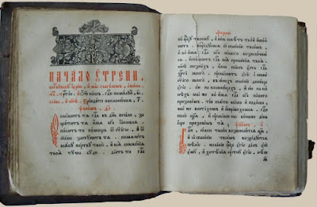
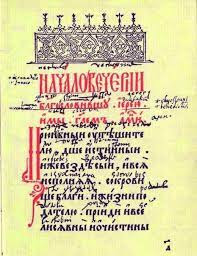
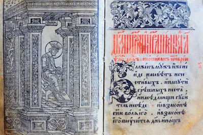
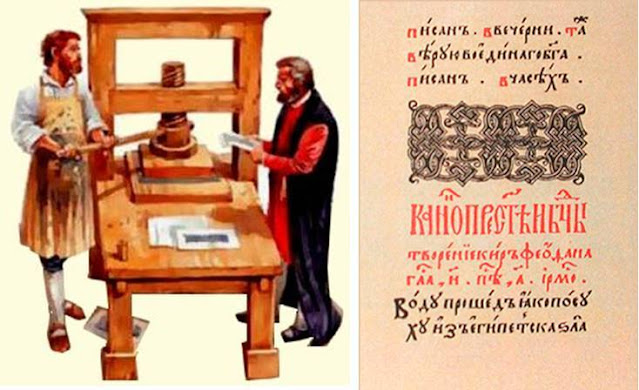
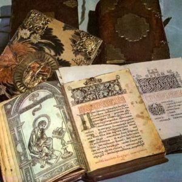
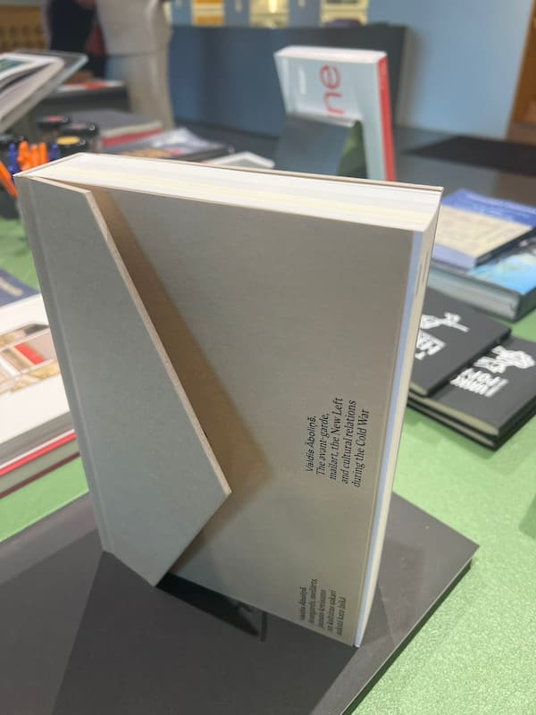
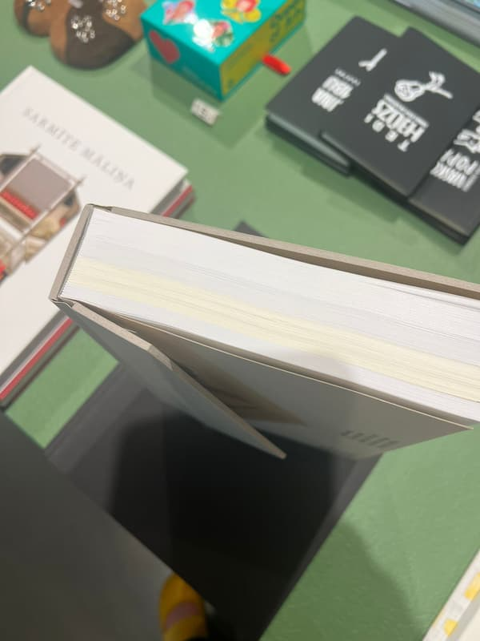
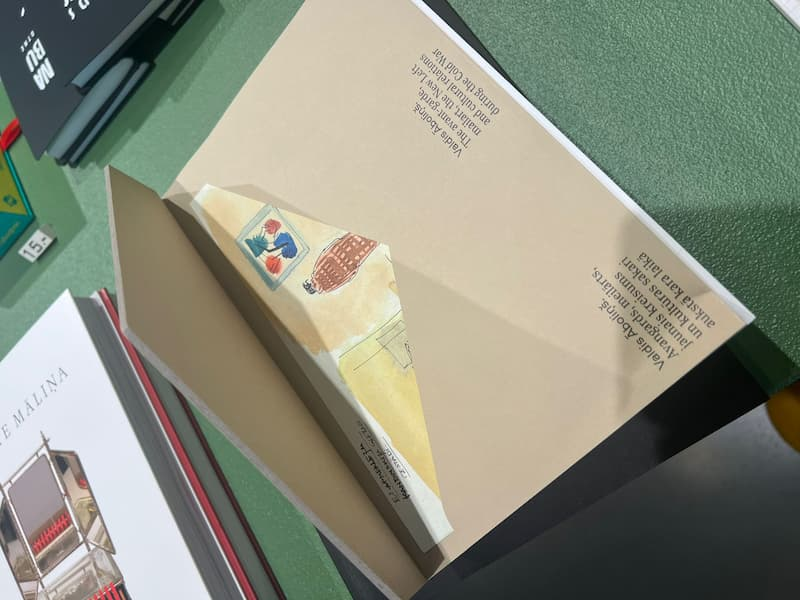

В этом году исполняется 460 лет со дня выхода в свет знаменитого «Часовника». В конце лета 1565 года выдающийся русский первопечатник Иван Федоров совместно с Петром Мстиславцем начал работу над новым изданием в Москве. «Часовник» стал второй датированной печатной книгой на Руси после знаменитого «Апостола», который увидел свет годом ранее, 1 марта 1564 года. Процесс печати был завершен к концу сентября того же года.

Книга представляла собой своеобразный домашний молитвенник, в котором все молитвы были распределены по часам дня. Помимо религиозного назначения, издание активно использовалось для обучения детей грамоте.

Структура книги получила свое название от основного раздела «Часы Девы Марии». Этот раздел делился на несколько временных промежутков: утренние часы (до 6 часов), первые часы (с 6 до 9 часов), третьи часы (с 9 до 12 часов) и последующие периоды.

Оформление книги могло быть весьма роскошным. Издатели нередко украшали «Часовники» миниатюрной живописью, использовали многоцветные шрифты и декоративные буквицы. Такие изысканные экземпляры ценились очень высоко и считались престижным подарком.

Популярность издания была феноменальной для того времени. Книга стала настоящим бестселлером, выходившим двумя тиражами. К сожалению, до наших дней дошло всего шесть экземпляров. Единственный сохранившийся экземпляр первого издания хранится в Брюсселе, а второе издание представлено единственным экземпляром в Российской национальной библиотеке Санкт-Петербурга.

Значение изданий Ивана Федорова трудно переоценить. Все его книги являются бесценными памятниками русской культуры XVI века и образцами высокого печатного искусства. Их отличает изящный шрифт, искусно выполненные декоративные элементы, включая заставки, концовки и орнаментальные заглавные буквы.
Этот юбилей напоминает нам о важнейшем этапе в развитии русской книжности и культуры печати, который был заложен трудами первопечатника Ивана Федорова.
Типография «Лазурь» продолжает великие традиции печатного дела, сочетая опыт прошлого с современными технологиями. Наше предприятие оснащено уникальным оборудованием, среди которого особое место занимает восьмикрасочная печатная машина. Это единственное подобное оборудование во всем Урало-Сибирском регионе, позволяющее печатать лицевой и оборотный стороны листа за один проход. Такой подход существенно снижает риск деформации бумаги и гарантирует высочайшее качество конечного продукта.
Производственный процесс поддерживается дополнительным цифровым оборудованием и современными офсетными машинами. Все последующие операции выполняются на оборудовании премиум-класса, что обеспечивает безупречное качество готовой продукции.
Профессиональный коллектив типографии — это команда опытных специалистов с более чем 20-летним стажем работы в книжном производстве. Наши сотрудники регулярно повышают квалификацию, участвуя в профессиональных выставках и семинарах по всему миру.
Качество нашей работы подтверждается многочисленными наградами и грантами, полученными за созданные книги. Мы постоянно ищем новые решения и внедряруем инновационные подходы в книгопечатание.

В настоящее время команда типографии активно изучает новые технологические решения в области книжного переплета. Недавно на одной из европейских выставок был представлен уникальный образец переплета, который открывает новые возможности для создания эксклюзивных изданий. Сейчас этот образец находится в пути к нам, где наши специалисты проведут тщательное исследование технологии и разработают методику её внедрения.

Это позволит нам предложить клиентам ещё более оригинальные и запоминающиеся решения для их проектов, продолжая традиции инновационного развития и стремления к совершенству в мире книгопечатания.
